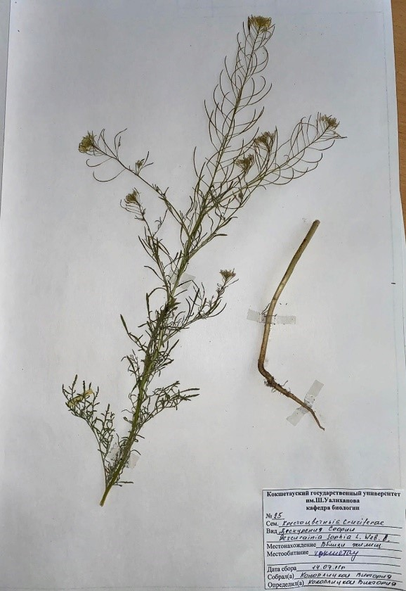

Сармала София - Descurainia sophia -Дескурайния Софии

Биологиялық сипаттамасы: Бір жылдық, қосжарнақты шөптесін өсімдік. Тамыры өзек, тармақталған. Сабағы тік, тармақталған, биіктігі 10-80 см құрайды, сұрғылт түсті, түкті. Жапырақтары кезектесіп отырады, отырықшы, екі немесе үш рет түйіршіктелген, ұзындығы 1,5-8 см, ені 0,8—3 см, түбінде құлақтары бар, түкті. Гүлдері ақшыл сары түсті. Жапырақтары кішкентай, кейде дамымаған, сопақша тәрізді, негізі ұзын болып келеді. Жемістері пайда болғаннан кейін ұзындығы 6-40 см болатын ұзын түтікше пайда болады. Жемісі - көп тұқымды, ұзындығы 10-30 мм, айқын ортаңғы тамыры бар. Тұқымдары сопақша, сығылған, бүктелген, сарғыш-қоңыр түсті. Мамырдан тамызға дейін гүлдейді, қыркүйекке дейін жеміс береді.
Таралу аймағы:Ол Африканың солтүстік-шығысында (Алжир, Египет, Марокко) және арктикалық және Оңтүстік-Шығыс Азияның тропикалық аймақтарынан басқа бүкіл Еуразияда кездеседі. Қазақстанда жайылымдарда, бақтарда, жол бойында, қоқыс алаңдарында, тұрғын үйдің жанында, егістіктерде, су басқан шалғындар мен тұзды жерлерде, кейде тау бөктерінде және жағалау жартастарында өседі.